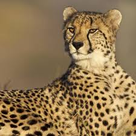
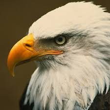

Animals Geography |
| Page1 |
Page2 |
Page3 |
Page4 |
 |
Cats are small, furry mammals known for their agility and playful nature, often kept as beloved pets. They possess sharp senses, including excellent nocturnal vision and sensitive hearing, and use sounds like purring and meowing to communicate their feelings. |
 |
The cheetah is a fast, carnivorous feline with distinct yellow fur and black spots, known as the world's fastest land animal, with adaptations like long legs and a flexible spine |
 |
Dogs are domesticated mammals and the first species to be domesticated by humans, evolving from wolves over 14,000 years ago. Known for their loyalty and playful nature, dogs are excellent companions, providing unconditional love and acting as alert watchdogs. |
 |
Eagles are powerful, large birds of prey known for their exceptional eyesight, strong talons, and hooked beaks, which they use to capture and tear apart their prey, primarily live animals |
 |
The lion is a powerful, large wild cat known as the "King of the Jungle" for its strength and majestic presence. Lions live in social groups called prides and are apex predators, hunting as a team to feed on prey. |
 |
The tiger (Panthera tigris) is a powerful, large-barked feline recognized by its distinctive dark stripes on a yellow coat, making it the national animal of India |